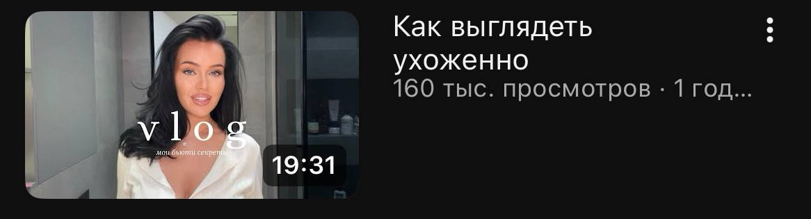
Как выглядеть ухоженно
Бьюти-рутина и точечные находки: окрашивание волос как «визитная карточка», подкручивание ресниц, оформление бровей, автозагар, энзимная пудра, питательный крем, гель для бровей.
Саломатова Вероника Максимовна
life | love | beauty
Автор. Институт Великих Женщин. Авторский терапевтический проект «Великая женщина» — о женском благородстве, красоте, силе, мудрости, ценности, глубине и сути.
Ваш канал NIKA. Слоган в баннере уже формулирует зонтичное позиционирование: life · love · beauty. Описание канала — «О нашем, о женском».
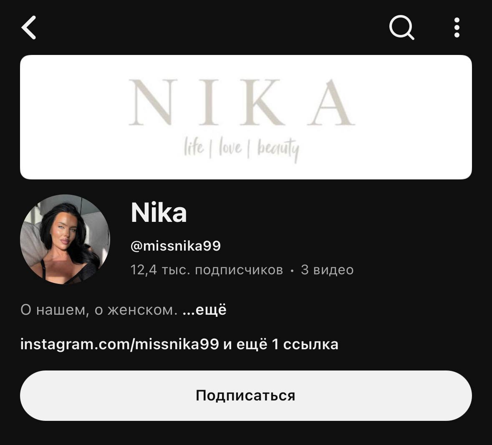
12 400 подписчиков · 3 видео. Виральное видео «Как выглядеть ухоженно» собрало 160 тыс. просмотров — это ×13 к базе подписчиков.

Бьюти-рутина и точечные находки: окрашивание волос как «визитная карточка», подкручивание ресниц, оформление бровей, автозагар, энзимная пудра, питательный крем, гель для бровей.
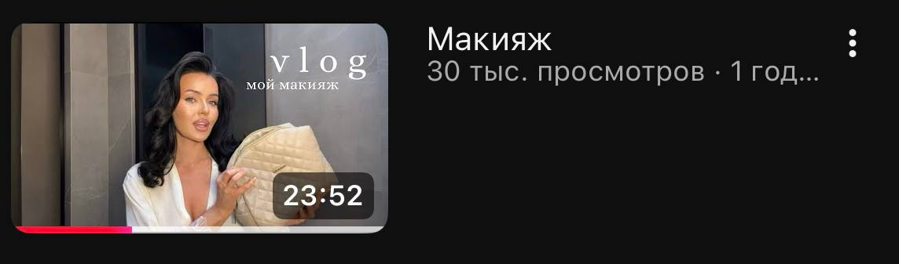
Полный пошаговый макияж от подготовки кожи (гидрогелевые маски, сыворотка для пор, маска-плёнка) до финального образа: тональный, кисти, консилер, пудра, бронзер, румяна, брови, тушь, тинт.
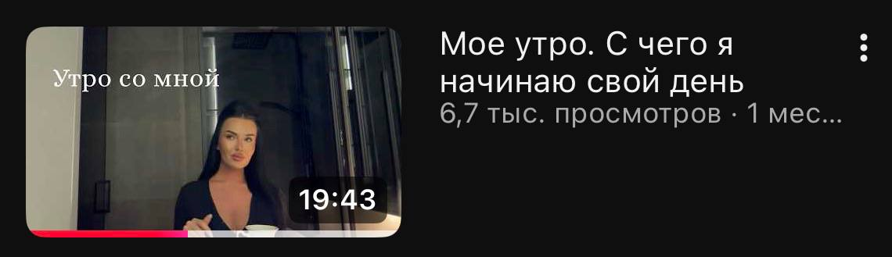
Утренние ритуалы: чтение перед телефоном, зарядка с МФР, БАДы (хлорофилл, магний, омега), уход за лицом, мезотерапия. Здесь Вы впервые анонсируете: «будем говорить о нашем, о женском, о психологии».
Ваш профиль @missnika99. Категория «Author». Шапка отсылает к проекту «Великая женщина» и Институту Великих Женщин. Лента — выдержанная премиум-эстетика в чёрно-белой палитре.
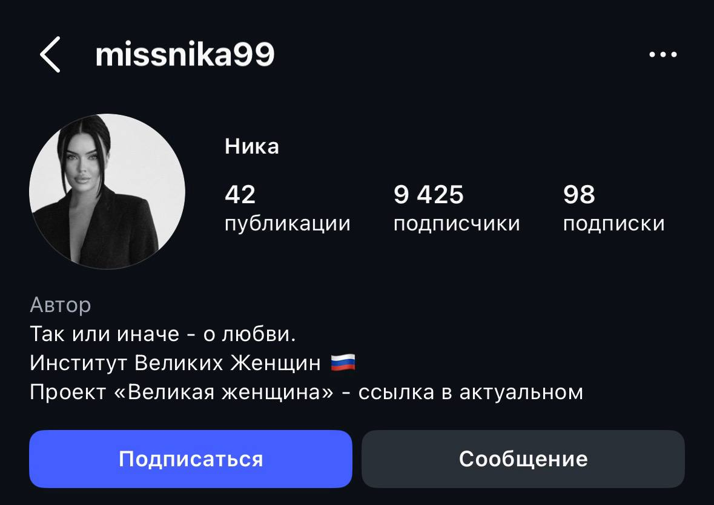
9 425 подписчиков · 42 публикации. Bio: «Так или иначе — о любви. Институт Великих Женщин. Проект "Великая женщина" — ссылка в актуальном».
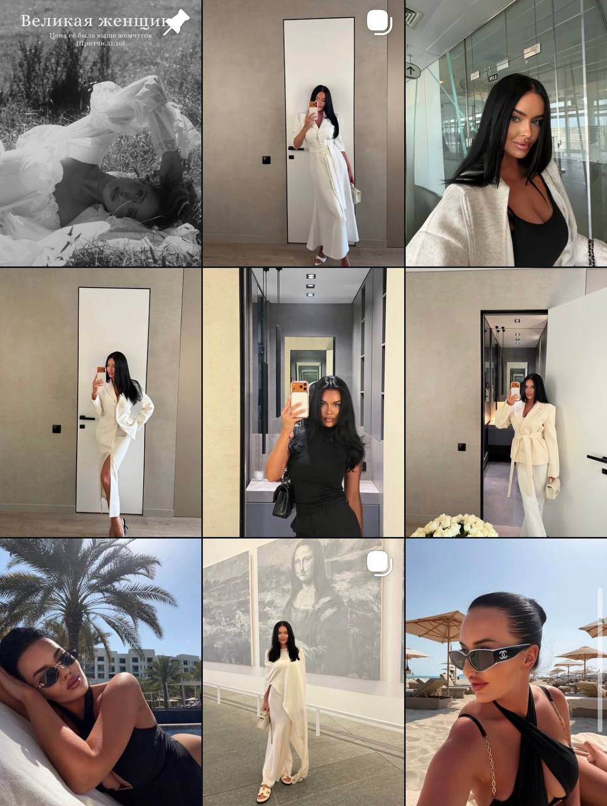
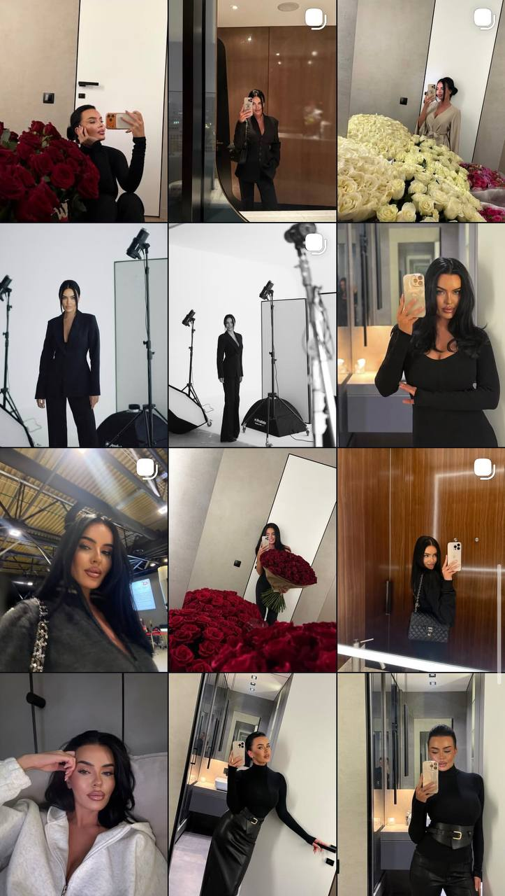
Визуальный код ленты — выдержанный, чёрно-белый, lux-минимализм.
Три направления, которые уже сейчас живут параллельно — и в них одна общая ось: внешняя красота, внутреннее состояние, женская суть.
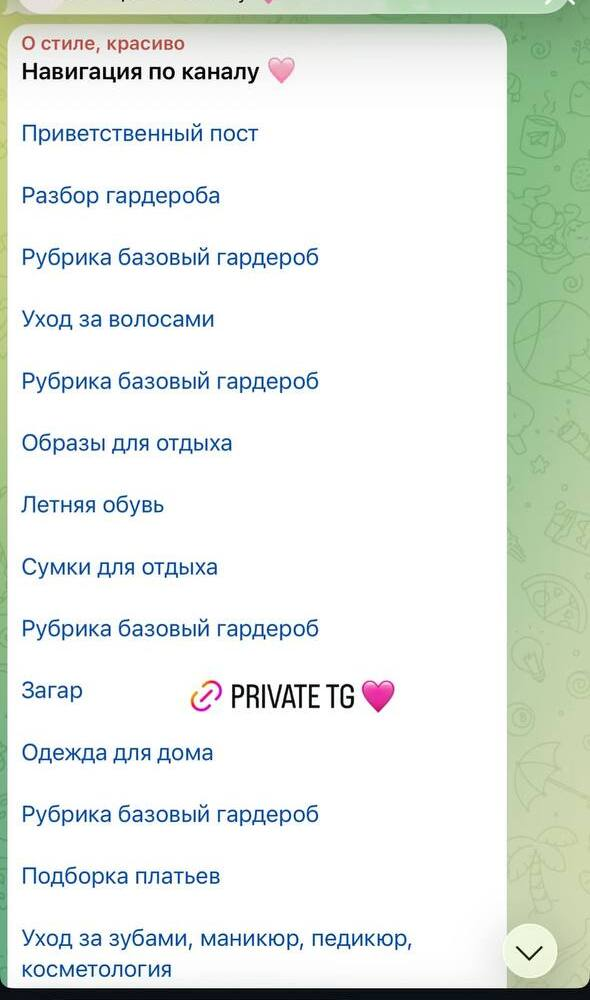
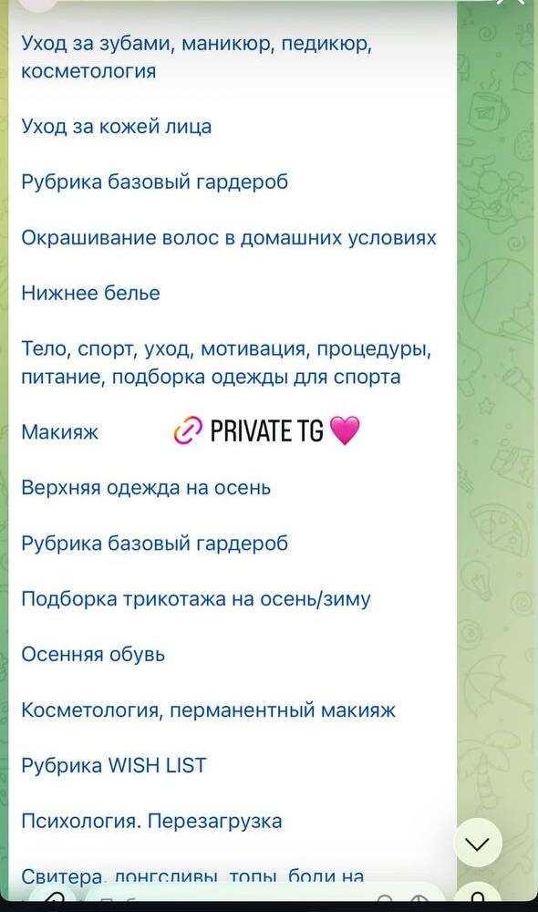
Закреплённая навигация в канале «О стиле, красиво» — более 25 рубрик, выстроенных в систему.
Прямые цитаты из закрытого чата «Великая женщина», сторис и обратной связи подписчиц. Эти отзывы уже есть в Ваших каналах, но пока нигде не вынесены на витрину.
Поток 8 мая 2026. Закрытый чат «Великая женщина Chat».
«Смотрю и плачу почему-то. Каждое слово в сердце, очень откликается».
Sasha · участница потока«Когда Ника повышала тембр голоса, я аж выпрямляла спину, иногда с нами будто именно так и надо, построже объяснить who is who. Все ваши мысли очень сильно откликаются».
Alena · участница потока«Потрясающе! Теория стала мгновенно применяться на практике, я буквально вселила в себя состояние Великой, подача себя в мир стала совершенно другой, и реакция людей на меня тоже».
ALISA · участница потока«От предвкушения просмотра и от самого просмотра лекций ощущение невероятно приятное и спокойное, сколько же там силы и уверенности».
Участница потока«Сегодня пересматривала видео ещё раз. Чувствую, что это истина, очень резонирует со мной, но сопротивление есть… И в то же время состояние спокойствия и уверенности тоже есть».
Sasha · повторный просмотр«Мне сегодня ночью приснился сон, и там я будто вернулась к своим истокам. Это состояние не описать словами, только прочувствовать можно. Я была такой легкой, доброй, притягательной, такой искренней и настоящей. Люди тянулись ко мне, каждый хотел соприкоснуться. До сих пор мурашит».
Участница потока«Прослушала все лекции в максимально приятном состоянии. Поняла каждое слово, как будто всё, что я искала всю жизнь пришло в этот один момент. С момента прослушивания всех лекций, на автомате включается состояние великой и это настолько прекрасно чувствуется, что все мои запросы почти тут же приходят… Раньше постоянно жила в спешке куда-то, в мужском режиме и даже по началу было тяжело входить в женскую суть, но Ника, вы расставили всё на места. Благодарю Вас от всего сердца за то, что вы делаете для других женщин, это бесценно».
Участница, прошедшая все 3 лекции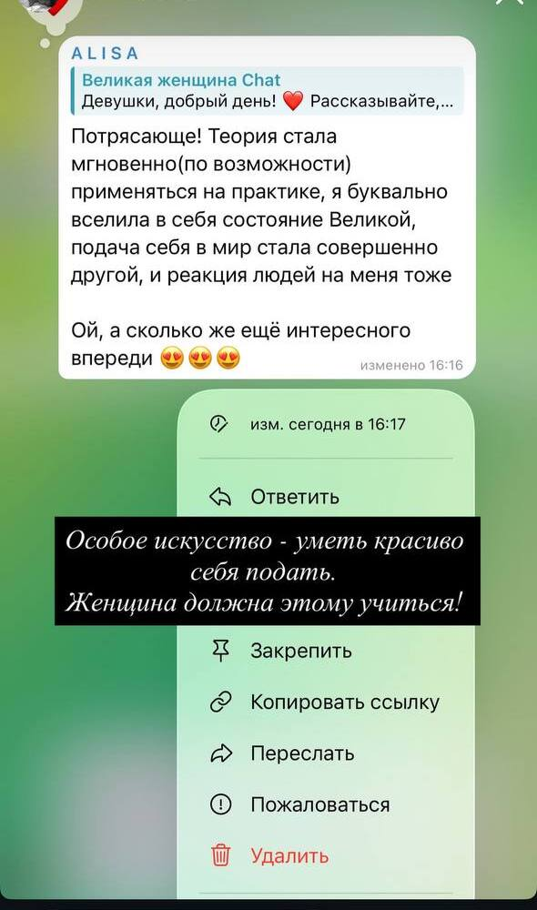
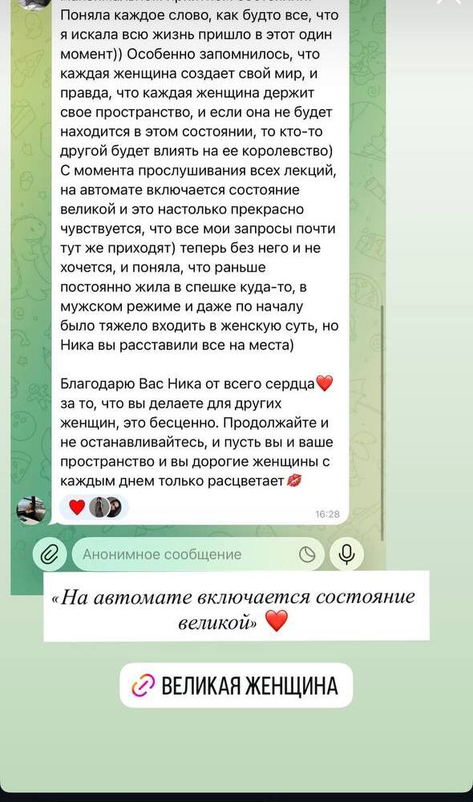
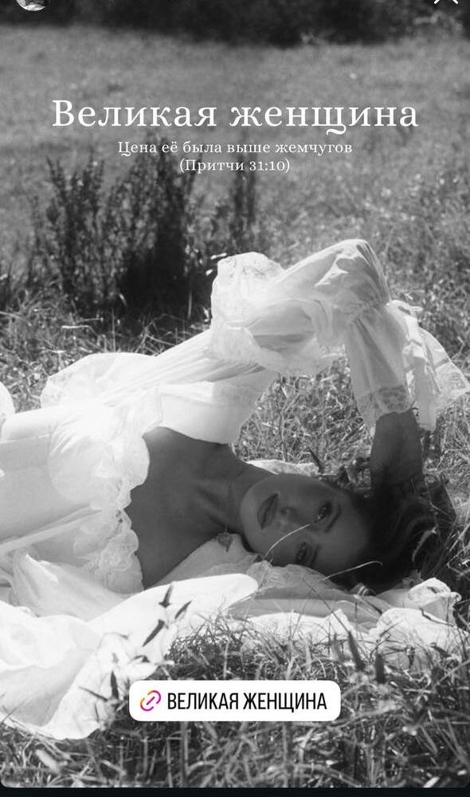
Период с июля 2025 по март 2026.
«Сегодня вступила в Ваш канал и просто считаю лучшим вложением в себя. Вы вдохновляете, мотивируете и просто радуете глаз. За пару недель произошли изменения во мне, а что важно — это стали замечать окружающие. Просто всё в меру, без копирований и подражаний».
Подписчица · 15 июля 2025«Встретились с подругой за ужином. Она, как всегда, потрясающе выглядит. — А ты обратила внимание как я одета? — Конечно, очень стильно и элегантно! — Это всё благодаря твоему каналу».
Подписчица · 27 ноября 2025«И всё-таки сделала разбор своего гардероба. Ещё я сразу же составила около 20 образов на осень/зиму/весну как раз по вашим наводкам и примерам, я так кайфанула. Спасибо огромное».
Подписчица · 6 декабря 2025«Присоединилась сейчас к каналу. Очень много добавила уже в корзину, потрясающие подборки образов, всё, как я люблю».
Emma Dietrich · подписчица«Купила доступ, вот это вау. Куча классных луков».
Arina · первое впечатление«Мы обе брюнетки, и похожая фигура, все образы на меня как влитую, я безумно довольна. Спасибо».
Подписчица · 9 января 2026«Вероника, добрый день. Хочу сказать спасибо за ваш канал о стиле. Благодаря вам я больше не смотрю других блоггеров-стилистов, потому что именно у вас я нашла то, что давно искала. Приобрела уже много всего из ваших рекомендаций, получаю комплименты по образам».
Подписчица · 21 января 2026«Спасибо Вам что делитесь ссылками, я скупаю почти половину из того, что советуете, и очень вдохновляет Ваш стиль. Ничего лишнего».
Aleksandra · подписчица«Ника, дорогая, я уже в предвкушении как я выброшу весь свой гардероб сегодня, потому что я уже заказала бОльшую половину одежды по Вашим рекомендациям. Это правда так красиво и женственно… Благодарю за труд проделанный, и за то что делаете мир прекраснее».
Julia · новая подписчица«Даже в таком простом — стиль. Всем девушкам нужно в Ваш канал. Там сплошное вдохновение».
Подписчица · 3 марта 2026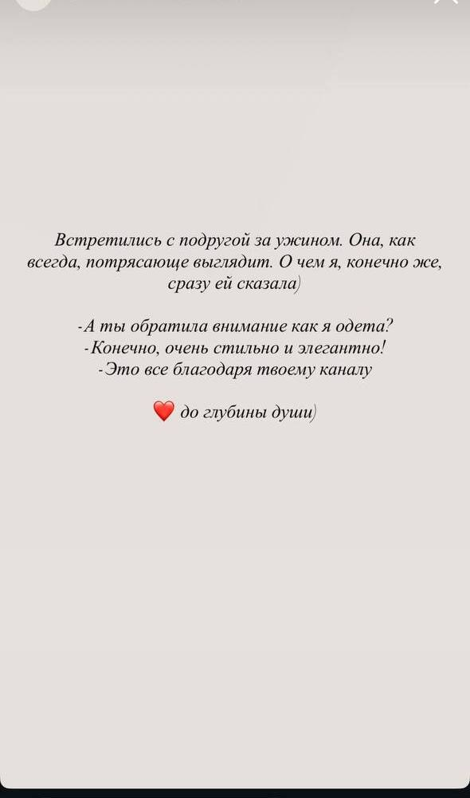
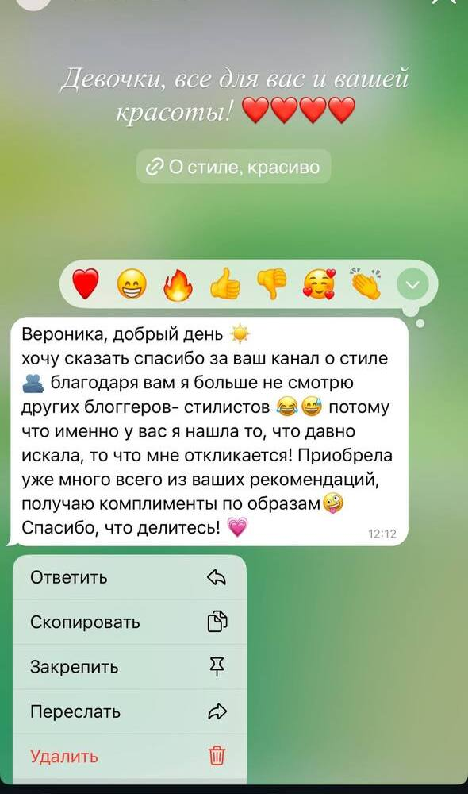
Обе воронки запущены и приносят оплаты. Точка входа — актуальные сторис в Instagram. Каждая сторис содержит CTA-кнопку.
Разовый продукт · сайт + оплата
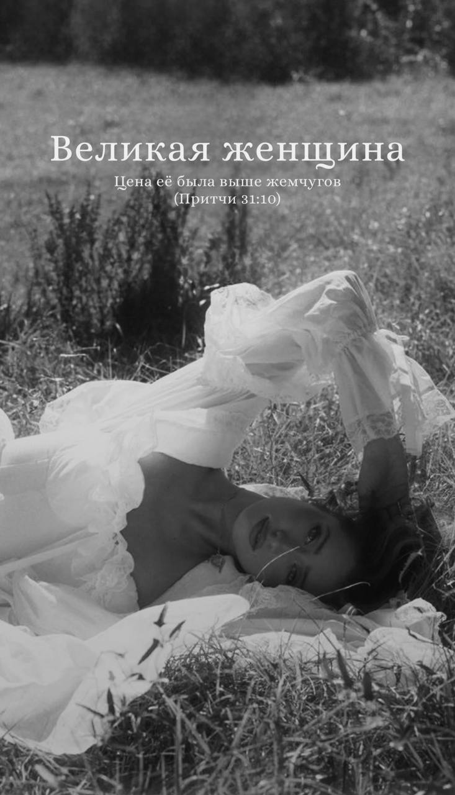
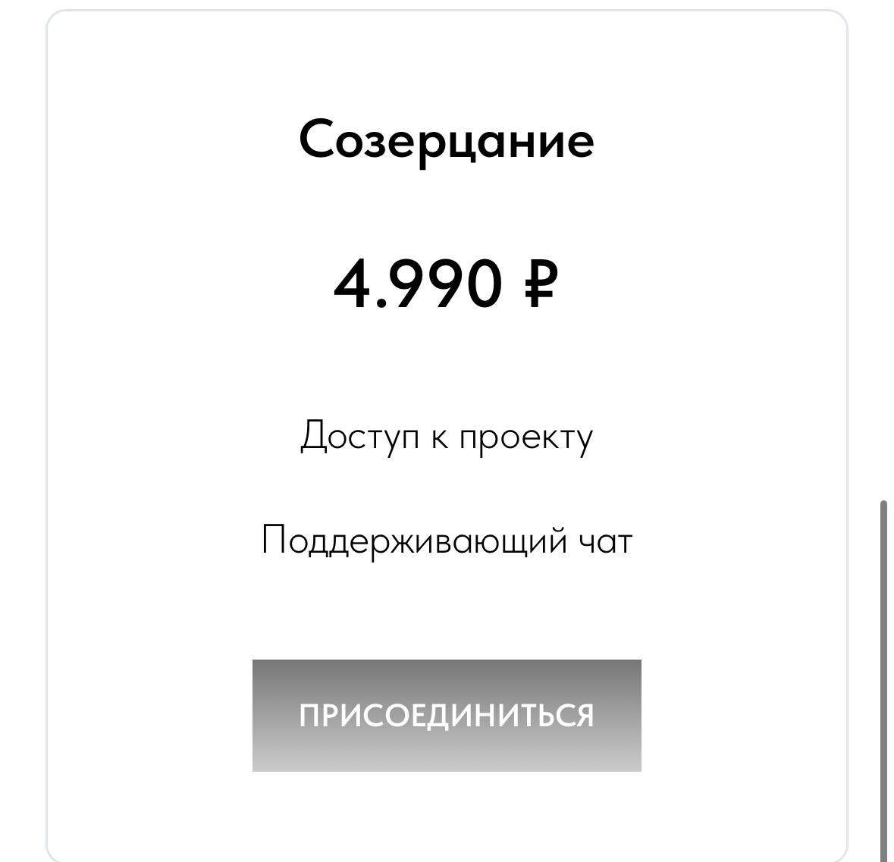
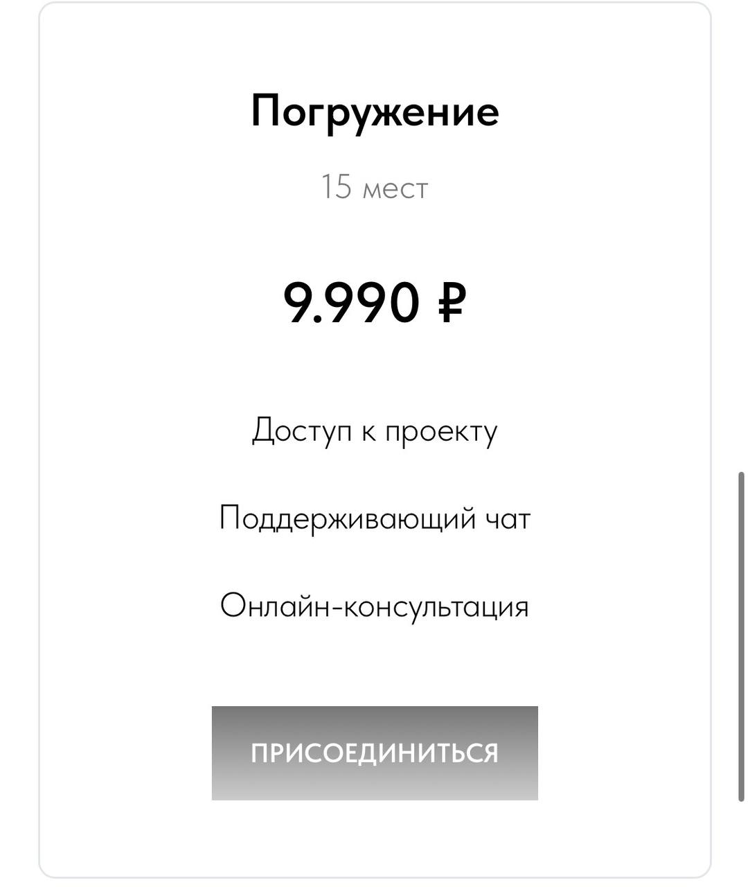
Подписочная модель · 999 ₽ / мес
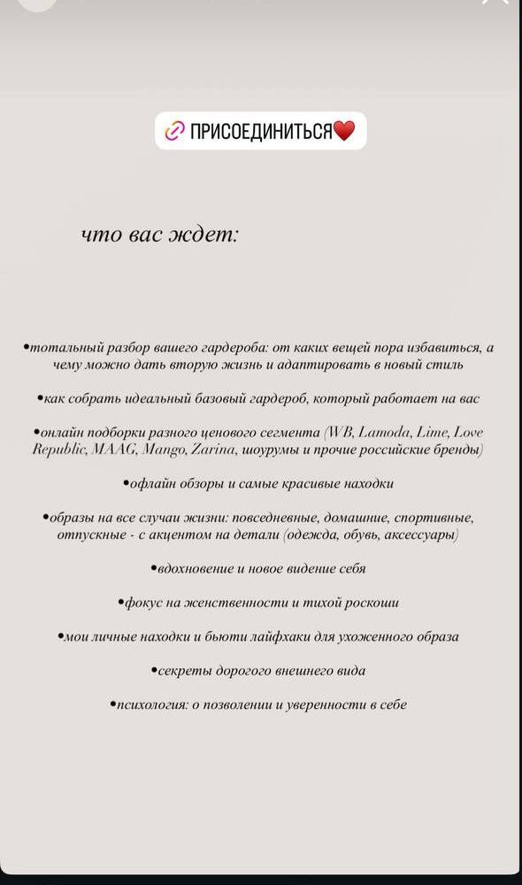
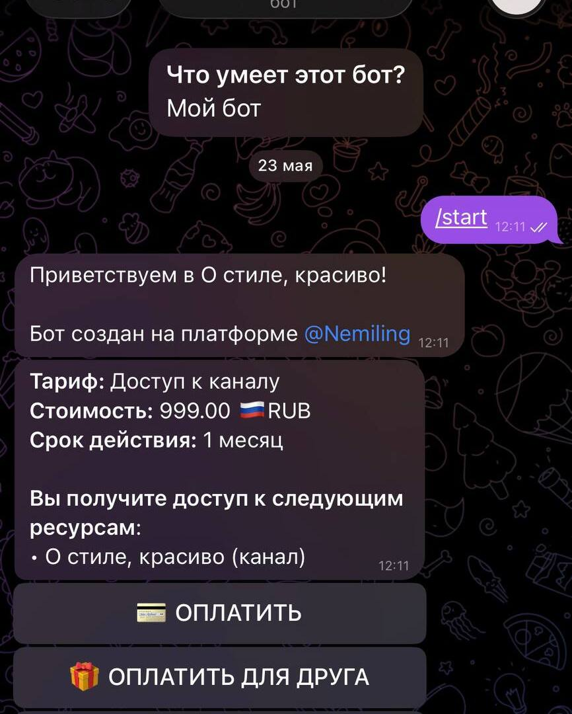
Упакованные актуальные с активными CTA. Рабочий бот на платформе Nemiling. Посадочный сайт с двумя тарифами. ИП оформлено, оплата через Payform работает. Это редкость для авторов такого масштаба — обычно нужно собирать с нуля.
Главный принцип — снизу вверх. Большинство строит блоги наоборот: сначала набирают аудиторию, потом думают как продавать, и весь трафик уходит в пустоту. У Вас обратная история — низ воронки уже готов. Всё что ниже — точечные усиления, не пересборка.
На YouTube уже есть базовый актив: 12 400 подписчиков и виральное видео «Как выглядеть ухоженно» с 160 тысячами просмотров — это редкое соотношение для канала такого размера. Сейчас этот трафик уходит впустую — в описаниях ссылка только на Instagram.
Экспортировать всё что уже есть: переписки в чате «Великая женщина», обратную связь после потоков, диалоги в директе, заявки на личные консультации.
Зачем — чтобы точнее попадать в боли, запросы, желания и потребности. Когда Вы видите аватара в деталях, Вы лучше чувствуете: какую тему предложить, где какой нерв задеть, как разогнать мысль. Это ощутимый сдвиг по конверсии без увеличения трафика.
Превратить YouTube и Instagram в основной источник холодного трафика. Особенно YouTube — он уже отдаёт виральные видео.
Маршрут: YouTube / Instagram → бесплатный материал в бот → знакомство с Вами → канал «О стиле, красиво» 999 ₽ / мес как первая ступень → «Великая женщина» как основной продукт → личные консультации как премиум.
Канал «О стиле» за 999 ₽ — идеальная первая ступень. Низкий чек, высокое доверие, регулярная выручка. На ней удобно строить дальнейшую лестницу.
В ленте сейчас есть стиль и эстетика, но мало живого присутствия. Форматы, которые здесь сработают:
Главный вектор — не «контент ради контента», а максимально премиально-аутентичный блог, который резонирует с Вашими интересами, видением, ценностями и миссией Института Великих Женщин. Не подделывать чужие тренды, а показать своё пространство — оно у Вас уже сформировано.
Помимо точечных усилений — вот как видится дальнейшая работа в целом.
Первое что делаем — выгружаем и анализируем всё, что у Вас уже накоплено:
Этот аудит даёт точку 0 — реальную картину аватаров без догадок.
После аудита видны слабые и сильные места: что в воронке течёт, какие точки уже работают на максимум, где недокручены формулировки, где не хватает шага в прогреве. Дальше — модернизируем именно эти точки. Без слома того, что уже работает.
Чтобы точнее попадать в аудиторию, раскладываем её по уровню осознанности — люди приходят в проект на разных стадиях, и для каждой нужен свой тип контента.
Для каждого уровня — свой формат. На первый — лайфстайл и эстетика. На второй — манифесты и точки зрения. На третий — отзывы, кейсы, разборы. На четвёртый — прямой CTA, дедлайны, ограниченные тарифы.
Базовая формула, на которой держится весь контент:
Когда у человека по факту так — у него не возникает вопроса «а стоит ли». Решение принимается само. Это принцип, на котором строятся все тексты, тарифные блоки, описания, рилсы.
Форматы из блока «Что усилить» — это не «сделать и ждать». Это серия тестов: запускаем, замеряем, оставляем то, что даёт результат, масштабируем. Каждый формат подключаем к существующей воронке так, чтобы зритель естественно проходил путь: рилс → актуальные → бот или лендинг → продукт.
Отдельно стоит обсудить: какие цели Вы ставите по проекту на ближайшие 3, 6, 12 месяцев. От этого зависит — что приоритетно модернизировать, что можно отложить, во что вкладывать ресурс. Если цели «масштаб» — это одна стратегия. Если «удержать качество и докрутить» — другая. Новая инфраструктура требует времени и тестов, и важно её строить под конкретные цифры, а не «в общем».
Продукт, эстетика, аудитория, виральный YouTube, отзывы выпускниц, рабочая инфраструктура, оформленное ИП, две действующие воронки.
Не хватает не нового — не хватает внутренней инфраструктуры под то, что уже есть, и точечной работы с данными.
И — не хватает человека, который дореализует всё это и поможет Вам вылить в мир в более объёмном и масштабном формате Ваше видение, мысли, ценности, миссию — то, чем Вы живёте каждый день.